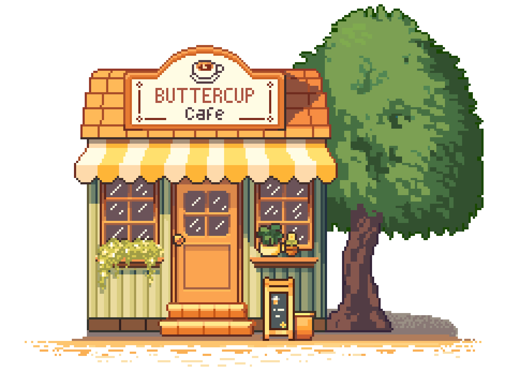
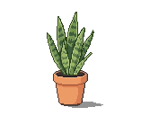
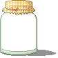
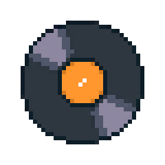

Press Enter or Escape to fold it back into the jar.
P.S.
Augmented realityHCIComputer graphics
Master's student @ Institut Polytechnique de Paris

Dimah
I'm an IT student who likes cute things, music, and coffee!|

have a seat


Press Enter or Escape to fold it back into the jar.
P.S.
Ask me anything !
I completed a bachelor's degree in computer science, then followed a master's program at IP Paris to pursue my passion: interaction design and XR.
P.S. fuelled by a lot of coffee ~
For my end-of-studies internship, I joined a cybersecurity startup as a UI/UX engineer. I designed new features from scratch and improved the platform's overall UX.
P.S. I also designed its complex data visualizations ✦
My biggest one is an AR guidance system for people with Parkinson's: it lays a walking path across their own floor. For more projects, check out the table below ↓
P.S. it won Best Poster at IEEE ISMAR 2025 !
I love music! I play piano and guitar, and my playlists swing between heavy metal, hard rock and techno.
P.S. the louder, the better ♪
Definitely cats! They make you work for their affection, and that's exactly what makes it worth it.
P.S. still waiting for mine ~
on the table
A Quest 3 system that lets people with Parkinson's point at where they want to go, and lays a walking path across their own floor. Pilot-tested with five patients.
read the case study →Interactive 3D scene editing system with multi-modal segmentation and hit-testing algorithm
read the case study →Bitmap-to-vector conversion system for hand-drawn sketches using skeleton extraction and topological graph construction
read the case study →The "Smart Wardrobe" is a concept — a design intervention that directly addresses the problem of clothing overconsumption by creating a physical constraint mechanism, unlike digital solutions that rely on willpower alone.
read the case study →Interactive visualization platform for exploring global coffee trade patterns and sustainability metrics
read the case study → InternshipRewriting and optimizing GATEwAY, a post-processing tool designed to automatically analyze conformational changes in molecular dynamics (MD) simulation data.
read the case study →A quantitative user experience (UX) study conducted on the Goodreads website. The project aimed to evaluate how intuitive, efficient, and satisfying the process is for users when finding a book recommendation
read the case study →An augmented reality urban planning game that brings city management into the physical world through tangible interaction.
read the case study →The garage, research tree and HUD of a friend's indie tank game, all built from one component library and coloured from its logo.
see the screens →before you go
my current favorite song

meanwhile, in paris
visited countries
Buttercupcaféparis5 so far
currently reading
currently playing
Hades
62 hrs